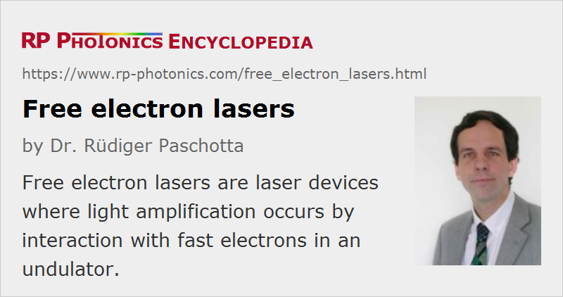

Free Electron Lasers
Acronym: FEL
Definition: laser devices where light amplification occurs by interaction with fast electrons in an undulator
More general terms: lasers
German: Freie-Elektronen-Laser
How to cite the article; suggest additional literature
Author: Dr. Rüdiger Paschotta
A free electron laser is a relatively exotic type of laser where the optical amplification is achieved in an undulator, fed with high energy (relativistic) electrons from an electron accelerator. Such devices have been demonstrated with emission wavelengths reaching from the terahertz region via the far- and near-infrared, the visible and ultraviolet range to the X-ray region, even though no single device can span this whole wavelength range.
In the undulator, a periodic arrangement of magnets (permanent magnets or electromagnets) generates a periodically varying Lorentz force, which forces the electrons to radiate with a frequency which depends on the electron energy, the undulator period, and (weakly) on the magnetic field strength. Both spontaneous and stimulated emission occur, allowing for optical amplification in a certain wavelength range.
The greatest attractions of free electron lasers are:
- their ability to be operated in very wide wavelength regions
- the large wavelength tuning range possible with a single device
- the spectacular performance in extreme wavelength regions, not reachable with any other light source
Compared with other synchrotron radiation sources (pure undulators and wigglers), FELs can generate an output with a much higher spectral brightness and coherence. This is very useful for a number of applications, including fields such as atomic and molecular physics, ultrafast X-ray science, advanced material studies, ultrafast chemical dynamics, biology and medicine.
The big drawback of FELs is that their setups are very large and expensive, so that they can be used only at relatively few large facilities in the world. The most ambitious free electron laser project is currently pursued in Hamburg (XFEL, within the TESLA project) with the goal of obtaining hard X-ray output with unprecedented performance features: wavelengths down to 0.085 nm and pulse durations below 100 fs. So far, wavelengths down to 6.5 nm have been achieved in the smaller FLASH facility. The LCLS at SLAC has already achieved lasing with 0.15 nm wavelength.
Suppliers
The RP Photonics Buyer's Guide contains 1 supplier for free electron lasers.
Questions and Comments from Users
Here you can submit questions and comments. As far as they get accepted by the author, they will appear above this paragraph together with the author’s answer. The author will decide on acceptance based on certain criteria. Essentially, the issue must be of sufficiently broad interest.
Please do not enter personal data here; we would otherwise delete it soon. (See also our privacy declaration.) If you wish to receive personal feedback or consultancy from the author, please contact him e.g. via e-mail.
By submitting the information, you give your consent to the potential publication of your inputs on our website according to our rules. (If you later retract your consent, we will delete those inputs.) As your inputs are first reviewed by the author, they may be published with some delay.
Bibliography
| [1] | D. A. G. Deacon et al., “First operation of a free-electron laser”, Phys. Rev. Lett. 38 (16), 892 (1977), doi:10.1103/PhysRevLett.38.892 |
| [2] | C. A. Brau, “Free-electron lasers”, Science 239 (4844), 1115 (1988), doi:10.1126/science.239.4844.1115 |
| [3] | K.-J. Kim and A. Sessler, “Free-electron lasers: present status and future prospects”, Science 250, 88 (1990), doi:10.1126/science.250.4977.88 |
| [4] | G. R. Neil and L. Merminga, “Technical approaches for high-average-power free-electron lasers”, Rev. Mod. Phys. 74, 685 (2002), doi:10.1103/RevModPhys.74.685 |
| [5] | W. Ackermann et al., “Operation of a free-electron laser from the extreme ultraviolet to the water window”, Nature Photon. 1, 336 (2007), doi:10.1038/nphoton.2007.76 |
| [6] | P. Emma et al., “First lasing and operation of an ångstrom-wavelength free-electron laser”, Nature Photon. 4, 641 (2010), doi:10.1038/nphoton.2010.176 |
| [7] | J. N. Galayda et al., “X-ray free-electron lasers – present and future capabilities”, J. Opt. Soc. Am. B 27 (11), B106 (2010), doi:10.1364/JOSAB.27.00B106 |
| [8] | E. C. Snively et al., “Broadband THz amplification and superradiant spontaneous emission in a guided FEL”, Opt. Express 27 (15), 20221 (2019), doi:10.1364/OE.27.020221 |
| [9] | The World Wide Web Library on Free Electron Lasers, http://sbfel3.ucsb.edu/www/vl_fel.html |
| [10] | The LCLS (Linac Coherent Light Source) at SLAC (Stanford), http://lcls.slac.stanford.edu/ |
| [11] | The European X-ray laser project XFEL, http://xfel.desy.de/ |
See also: ultraviolet light, ultraviolet lasers, X-ray lasers
and other articles in the category lasers
|  |
If you like this page, please share the link with your friends and colleagues, e.g. via social media: 


These sharing buttons are implemented in a privacy-friendly way! |
2020-07-02
What is the energy level diagram of a free electron laser?
Answer from the author:
I think that the concept of energy levels is not applicable to such a laser – at least not with substantial additional theory.